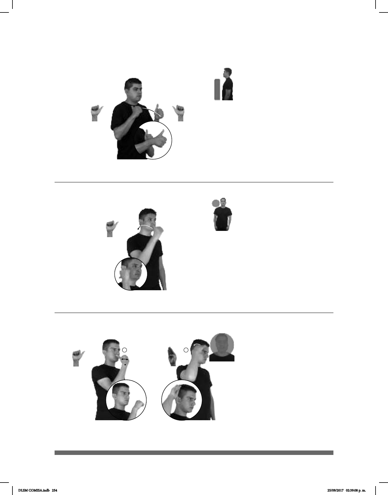

254
(A-64)
COMPETENCIA ATLETISMO pos-MI AMIGO+MUJER YA INSCRIBIRSE
Mi amiga se inscribió en una competencia de atletismo.
(A-65)
pos-TUYO SOBRINO ATRÁS pos-MI ESPOSO
Tu sobrino está atrás de mi esposo.
1
2
(A-66)
AUSTRALIA DECIR HABER MUCHO CANGURO
Dicen que en Australia hay muchos canguros.
Seña: SB
MD y MB A.1
MD palma hacia la
izquierda. MB palma hacia la derecha.
MD y MB a la altura del
pecho
MD se mueve formando un
arco hacia enfrente.
Simula la acción de
rebasar a otro competirdor.
sust. m. Conjunto de
actividades o competencias deportivas
que comprende los distintos tipos de
carreras, saltos y lanzamientos.
Seña: SM
A.1
Palma hacia la
izquierda.
A la altura del cuello
del lado derecho.
La mano se mueve
formando un arco hacia atrás.
adv. En, de o hacia el
lugar que queda a la espalda o a la
parte posterior de lo que se toma
como referencia.
Seña: SC: I. SM y II. SM
I. A.1; II. B-P.3
I. Palma hacia la izquierda;
II. La palma inicia oblicua hacia adentro y
hacia abajo y termina hacia afuera.
I. A la altura de la boca; II.
Inicia sobre la cabeza y termina arriba de
la sien.
I. La mano se agita de
derecha a izquierda; II. La muñeca gira y
cambia la orientación de la mano, pasa de
mostrar el dorso a mostrar la palma.
País del continente Oceanía
cuya capital es Canberra.
DLSM COMISA.indb 254 25/09/2017 02:39:08 p. m.